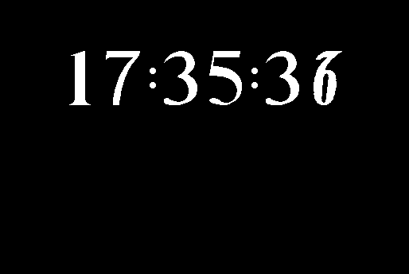

Download (external link)
dali-clock.tar.gz (29K) Dali Clock
copyright: Ephraim Vishniac
mod date: ?
license: ?
from url :
Ephraim Vishniac’s Home Page
A “re-write of Steve Capp’s Dali Clock program”, that “should run on any 1-bit Mac (System 7 or earlier.)” (The original is limited to earlier machines and system versions.) “Dali Clock is a digital clock. When a digit changes, it ‘melts’ into its new shape.” There is no last mod date, but the program includes the string “This version was created February 23, 1987”. Thanks to Ephraim Vishniac for adding it to his home page (look for the phrase “Dali Clock”). Source code is included.

Here is the md5 checksum for the download, signed with Gryphel Key 5:
--------- GRY SIGNED TEXT --------- 4cadc83d0a435e03b6b6d60b33d60a8b dali-clock.tar.gz ------- BEGIN GRY SIGNATURE ------- Gry/4Xa8CFcUzxdN/Gy9/DuCUOMloT0RcjEnj7D/1v9TcLKoI/aHVgba0jXsNJuU k533O1GEZp/9WH8qOo7+c3ParLbT36K4j/0Mi8XMeLCyPHnwui2a65agAzUGvlA1 saA/ITCU/Nf9omcPZEHKHK8I0e7JwiFbY43jNJWnqpqt4kf3gE5aUFeYIpZyZaOf -------- END GRY SIGNATURE --------